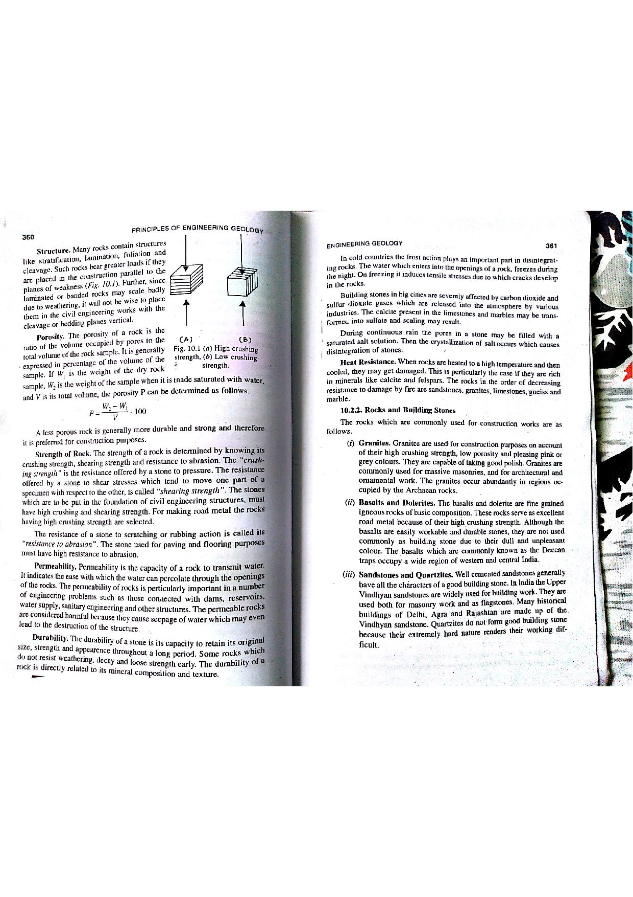

Q123: Phase Relations: Void Ratio vs. Porosity in Rock Mechanics and Geotechnics
In engineering geology, soil mechanics, and rock physics, geological materials (rocks and soils) are idealized as a multi-phase physical system consisting of solid mineral grains and pore spaces (voids). The pore spaces may be partially or completely filled with pore-water and air/gas.

Rigorous Mathematical Definitions
Let the total volume of a rock specimen be $V$, which consists of the volume of solid rock mass / mineral skeleton ($V_s$) and the volume of voids / pore spaces ($V_v$):

-
Void Ratio ($e$): The ratio of the total volume of pore spaces ($V_v$) to the volume of the solid rock mass / mineral skeleton ($V_s$):
$$e = \frac{V_v}{V_s}$$Key Physical Feature: Because $V_s$ is in the denominator, the void ratio is a true dimensionless ratio (not a percentage). It can theoretically exceed $1.0$ (e.g., $e > 1.0$ to $4.0$ in pumice, volcanic tuff, diatomite, and soft bentonitic clay).
-
Porosity ($n$): The ratio of the total volume of pore spaces ($V_v$) to the total bulk volume of the rock specimen ($V$):
$$n = \frac{V_v}{V} = \frac{V_v}{V_s + V_v}$$Key Physical Feature: Usually expressed as a fraction or percentage ($n \times 100\%$). Because the total volume $V$ is strictly greater than the pore volume ($V > V_v$), porosity must strictly lie in the range $0 < n < 1.0$ ($0\% < n < 100\%$).
Derivation of the Conversion Equations
The relationship between void ratio ($e$) and porosity ($n$) is derived directly from the fundamental volume partition equation $V = V_s + V_v$:
- Expressing $n$ in terms of $e$: Divide both numerator and denominator of the porosity definition by $V_s$: $$n = \frac{V_v}{V} = \frac{V_v}{V_s + V_v} = \frac{\frac{V_v}{V_s}}{\frac{V_s}{V_s} + \frac{V_v}{V_s}} = \frac{e}{1 + e}$$
- Expressing $e$ in terms of $n$: Rearrange the equation $n(1 + e) = e \implies n + n e = e \implies n = e(1 - n)$: $$e = \frac{n}{1 - n}$$
- Total Volume Expansion Factor ($1 + e$): $$\frac{V}{V_s} = \frac{V_s + V_v}{V_s} = 1 + \frac{V_v}{V_s} = 1 + e \implies V = V_s (1 + e)$$ $$1 - n = 1 - \frac{e}{1 + e} = \frac{1}{1 + e} \implies V_s = V(1 - n)$$
| Characteristic | Void Ratio ($e$) | Porosity ($n$) |
|---|---|---|
| Mathematical Definition | $e = \frac{V_v}{V_s}$ | $n = \frac{V_v}{V} = \frac{V_v}{V_s + V_v}$ |
| Normalizing Base | Solid mineral skeleton ($V_s$, unchanging constant under loading) | Total volume ($V$, variable under compressive deformation) |
| Range of Values | $0 < e < \infty$ (can readily exceed $1.0$) | $0 < n < 1.0$ (strictly bounded between $0\%$ and $100\%$) |
| Geotechnical Usage | Preferred in settlement, consolidation, and compaction calculations because $V_s$ remains constant during volume strain. | Preferred in hydrogeology, groundwater flow, reservoir engineering, and geophysical logging. |
In engineering geology and hydrogeology, not all pore spaces behave identically:
- Primary Porosity: Pores formed during initial deposition or crystallization of the rock (e.g., intergranular pores in sandstone, vesicles in basaltic lava).
- Secondary Porosity: Pores formed after rock consolidation due to tectonic stress, metamorphism, or chemical weathering (e.g., joints, faults, foliation partings, karst solution cavities in limestone).
- Effective Porosity ($n_e$): The ratio of interconnected pore volume through which fluids can actively flow to the total rock volume ($n_e = V_{\text{interconnected}} / V$). Isolated vugs or microscopic dead-end pores contribute to total porosity but do not participate in fluid transmission.
- Specific Yield ($S_y$) & Specific Retention ($S_r$): In an unconfined aquifer: $$n = S_y + S_r$$ where $S_y$ is the volume of water drained by gravity per unit total volume, and $S_r$ is the volume of water held by capillary and surface tension forces against gravity.
- (A) Void ratio
- (B) Porosity
- (C) Pores ratio
- (D) Effective porosity
Void ratio ($e$) is defined rigorously in soil mechanics, rock mechanics, and engineering geology textbooks (Bangar, p. 187; Terzaghi & Peck; ISRM) as the ratio of the volume of voids (pores) to the volume of solid rock mass: $$e = \frac{V_v}{V_s}$$ Because the volume of solids $V_s$ does not change during mechanical compression or consolidation (assuming incompressible mineral grains), geotechnical engineers utilize void ratio as the primary state variable for compaction and settlement equations.
Porosity ($n$) is defined as the ratio of the volume of pore spaces ($V_v$) to the total volume of the rock specimen ($V = V_s + V_v$): $$n = \frac{V_v}{V}$$ The question explicitly specifies the ratio to the "total volume of the solid rock mass" ($V_s$), which is the mathematical definition of void ratio, not porosity. Confusing total volume with solid volume is a classical examination pitfall.
"Pores ratio" is a completely fictitious, non-existent term fabricated as an examination distractor to mislead candidates unfamiliar with standard phase-relationship terminology.
Effective porosity ($n_e$) is the ratio of the volume of interconnected, drainable pore spaces ($V_{vi}$) to the total volume ($V$) of the rock. It accounts only for channels that permit fluid migration, excluding isolated, closed vesicles (such as gas bubbles in pumice). Like total porosity, it is normalized to total volume $V$, not solid volume $V_s$.
| Parameter Name | Symbol | Mathematical Formula | Units / Format | Typical Range in Intact Rocks |
|---|---|---|---|---|
| Void Ratio | $e$ | $e = \frac{V_v}{V_s} = \frac{n}{1 - n}$ | Dimensionless decimal (e.g. $0.05$) | $0.005 - 0.40$ (dense rocks); $> 1.0$ (pumice) |
| Total Porosity | $n$ | $n = \frac{V_v}{V} = \frac{e}{1 + e}$ | Percentage ($0 - 100\%$) or fraction | $0.5\% - 30\%$ (Granite: $<1\%$; Sandstone: $10-25\%$) |
| Effective Porosity | $n_e$ | $n_e = \frac{V_{\text{interconnected}}}{V}$ | Percentage ($0 - 100\%$) | $0.1\% - 22\%$ (always $\le n$) |
| Degree of Saturation | $S_r$ | $S_r = \frac{V_w}{V_v} = \frac{w G_s}{e}$ | Percentage ($0 - 100\%$) | $0\%$ (oven dry) to $100\%$ (fully saturated) |
| Moisture Content | $w$ | $w = \frac{M_w}{M_s} \times 100\%$ | Percentage | $0.1\% - 15\%$ (intact rock) |
A porous sandstone specimen has a laboratory measured porosity of $n = 20.0\%$ ($0.20$). Calculate its void ratio ($e$).
1. Use the fundamental conversion formula: $$e = \frac{n}{1 - n}$$ 2. Substitute $n = 0.20$: $$e = \frac{0.20}{1 - 0.20} = \frac{0.20}{0.80} = 0.25$$ The void ratio of the sandstone is $0.25$.
A sample of volcanic pumice has an exceptionally high void ratio of $e = 1.50$ due to abundant vesicular cavities. Calculate its porosity ($n$) expressed as a percentage.
1. Use the conversion formula: $$n = \frac{e}{1 + e}$$ 2. Substitute $e = 1.50$: $$n = \frac{1.50}{1 + 1.50} = \frac{1.50}{2.50} = 0.60 = 60.0\%$$ Physical Insight: Even though void ratio exceeds $1.0$ ($e = 1.50$), porosity can never exceed $100\%$ ($n = 60\%$).
A cylindrical core of limestone has diameter $D = 50\text{ mm}$, length $L = 100\text{ mm}$, and an oven-dry mass of $M_s = 485.0\text{ g}$. The true grain density of the solid calcite minerals is $\rho_s = 2.71\text{ g/cm}^3$. Calculate: (a) total volume $V$, (b) volume of solids $V_s$, (c) volume of voids $V_v$, (d) porosity $n$, and (e) void ratio $e$.
1. Total bulk volume $V$: $$V = \frac{\pi}{4} D^2 L = \frac{\pi}{4} (5.0\text{ cm})^2 \times (10.0\text{ cm}) = 196.35\text{ cm}^3$$ 2. Volume of solid mineral skeleton $V_s$: $$V_s = \frac{M_s}{\rho_s} = \frac{485.0\text{ g}}{2.71\text{ g/cm}^3} = 178.97\text{ cm}^3$$ 3. Volume of voids $V_v$: $$V_v = V - V_s = 196.35 - 178.97 = 17.38\text{ cm}^3$$ 4. Porosity $n$: $$n = \frac{V_v}{V} = \frac{17.38}{196.35} = 0.0885 = 8.85\%$$ 5. Void ratio $e$: $$e = \frac{V_v}{V_s} = \frac{17.38}{178.97} = 0.0971$$ Check: $e = \frac{n}{1 - n} = \frac{0.0885}{1 - 0.0885} = \frac{0.0885}{0.9115} = 0.0971$ (Verified).
A saturated clay-shale bed of initial thickness $H_0 = 12.0\text{ m}$ has an initial void ratio $e_0 = 0.85$. Under heavy embankment loading, the void ratio decreases to $e_1 = 0.70$. Assuming one-dimensional vertical strain and incompressible solid grains, calculate the total consolidation settlement ($\Delta H$) of the shale layer.
1. Use the standard settlement equation: $$\frac{\Delta H}{H_0} = \frac{\Delta e}{1 + e_0}$$ 2. Compute change in void ratio $\Delta e$: $$\Delta e = e_0 - e_1 = 0.85 - 0.70 = 0.15$$ 3. Calculate settlement $\Delta H$: $$\Delta H = H_0 \left(\frac{\Delta e}{1 + e_0}\right) = 12.0\text{ m} \times \left(\frac{0.15}{1 + 0.85}\right) = 12.0 \times \left(\frac{0.15}{1.85}\right) = 12.0 \times 0.08108 = 0.973\text{ m} \approx 97.3\text{ cm}$$
In a sedimentary basin, the porosity of shale decreases with depth $z$ according to Athy's compaction equation: $n(z) = n_0 e^{-c z}$, where initial surface porosity is $n_0 = 40.0\%$ and compaction coefficient is $c = 0.0004\text{ m}^{-1}$. Calculate the void ratio of the shale at a depth of $z = 1500\text{ m}$.
1. Compute porosity at $z = 1500\text{ m}$: $$c z = 0.0004 \times 1500 = 0.60$$ $$n(1500) = 0.40 \times e^{-0.60} = 0.40 \times 0.54881 = 0.2195 = 21.95\%$$ 2. Compute corresponding void ratio $e$: $$e = \frac{n}{1 - n} = \frac{0.2195}{1 - 0.2195} = \frac{0.2195}{0.7805} = 0.281$$
A weathered granite regolith has a void ratio $e = 0.65$, water content $w = 18.0\%$, and specific gravity of solid mineral grains $G_s = 2.68$. Calculate the degree of saturation ($S_r$) of the specimen.
1. Use the fundamental phase identity: $$S_r \cdot e = w \cdot G_s$$ 2. Solve for degree of saturation $S_r$: $$S_r = \frac{w \cdot G_s}{e} = \frac{0.18 \times 2.68}{0.65} = \frac{0.4824}{0.65} = 0.7422 = 74.22\%$$ The rock pore spaces are 74.2% filled with water and 25.8% filled with air.
A core of vesicular basalt has a total volume $V = 200\text{ cm}^3$ and total porosity $n = 18.0\%$. In a helium pycnometer test, the volume of interconnected open pores accessible to gas is determined to be $V_{\text{connected}} = 16.0\text{ cm}^3$, while the remaining vesicles are sealed. Calculate: (a) the total pore volume $V_v$, (b) the effective porosity $n_e$, and (c) the percentage of total pore volume that is completely sealed.
1. Total pore volume $V_v$: $$V_v = n \times V = 0.18 \times 200\text{ cm}^3 = 36.0\text{ cm}^3$$ 2. Effective porosity $n_e$: $$n_e = \frac{V_{\text{connected}}}{V} = \frac{16.0\text{ cm}^3}{200\text{ cm}^3} = 0.080 = 8.0\%$$ 3. Sealed pore volume and percentage: $$V_{\text{sealed}} = V_v - V_{\text{connected}} = 36.0 - 16.0 = 20.0\text{ cm}^3$$ $$\% \text{ Sealed} = \left(\frac{20.0}{36.0}\right) \times 100\% = 55.56\%$$
An alluvial sandy aquifer underlying a dam foundation has a specific gravity $G_s = 2.65$ and a void ratio $e = 0.65$. Calculate: (a) the critical hydraulic gradient ($i_c$) at which piping / quicksand failure occurs, and (b) re-express $i_c$ directly in terms of porosity $n$.
1. Critical hydraulic gradient in terms of void ratio: $$i_c = \frac{G_s - 1}{1 + e} = \frac{2.65 - 1}{1 + 0.65} = \frac{1.65}{1.65} = 1.00$$ 2. Re-express in terms of porosity $n$: Since $\frac{1}{1 + e} = 1 - n$: $$i_c = (G_s - 1)(1 - n)$$ Compute $n$: $$n = \frac{e}{1 + e} = \frac{0.65}{1.65} = 0.3939$$ $$i_c = (2.65 - 1)(1 - 0.3939) = 1.65 \times 0.6061 = 1.00$$ Geotechnical Criterion: If upward seepage head loss per unit length reaches $i_c = 1.00$, effective vertical stress reduces to zero ($\sigma' = 0$), causing fluidization of the sediment.